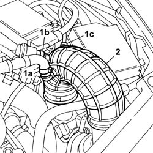

1048A50 air inlet pipe to turbocharger - r + r
- Path
- Procedures > 10 ENGINE > 1048 ENGINE AIR SUPPLY CIRCUIT > 1048A VACUUM AIR CIRCUIT > 1048A50 air inlet pipe to turbocharger - r + r
- Kind
- repair procedure (removal / refitting; the operation number is the code)
- Applies to
- engines: 2.0 TB; all production periods
- Interactive page
- https://sloeber94.github.io/elrnDB-lThss/en/#/381448
Applies to: engines: 2.0 TB; all production periods
 Removing
Removing
 Refitting
RefittingSee in Op. 7040D50 ENGINE COMPARTMENT UPPER SOUND INSULATION SHIELD - R.R.
1. Disconnect the oil vapour recovery pipe (1a), the supercharging air by-pass valve pipe (1b) and the fuel vapour recirculation pipe (1c) from the hose.
2. Disconnect the pipe from the air flow meter and from the turbocharger air intake hose, then remove it.

Applies to: engines: 2.0 TB; all production periods
Refitting
Removing- Fit the air inlet pipe and connect it to the air flow meter and to the turbocharger air intake hose.
- Connect the oil vapour recovery pipe, the supercharging air by-pass valve pipe and the fuel vapour recirculation pipe.
See in Op. 7040D50 ENGINE COMPARTMENT UPPER SOUND INSULATION SHIELD - R.R.
Topics linked from this page (1)
Topics that link to this page (63)
- 1004B10 POWER UNIT with manual gearbox - R.R.
- 1008A42 Power unit RIGID MOUNT - GEARBOX side - R&R
- 1008A46 Power unit RIGID MOUNT - TIMING side - R&R
- 1008B30 Gearbox side mount FLEXIBLE BLOCK/S - Replace
- 1016C10 SINGLE CYLINDER HEAD - R.R. and Replace gasket
- 1020A20 CRANKCASE SUMP - R.R. clean contact surfaces and apply sealant
- 1020D18 Front crankshaft COVER OIL SEAL - Replace
- 1032B10 TOOTHED timing BELT - R.R. for timing adjustment or replacement
- 1032B46 TOOTHED DRIVE PULLEY/S - R.R.
- 1032B52 TOOTHED DRIVEN PULLEY (one) - R.R.
- 1032C18 Timing belt MOVING TENSIONER - R.R.
- 1032C32 TIMING BELT FIXED TENSIONER - R.R.
- 1032D12 Timing system protective COVER(S) - R.R.
- 1036C10 CAMSHAFTS in cylinder head - R.R.
- 1036C39 timing variator on cylinder head intake camshaft - r r
- 1036H58 HYDRAULIC TAPPETS (all) - R.R. - Includes R.R. camshaft
- 1048A10 COMPLETE AIR FILTER -R.R.
- 1048A54 TURBOCHARGER air inlet HOSE from rigid pipe - R.R.
- 1048B14 air delivery pipe between turbo charger and heat exchanger - replace
- 1048B44 RIGID air supply PIPE from heat exchanger to intake manifold - R.R.
- 1056B10 AIR FLOW METER - R.R.
- 1056B14 THROTTLE CASING - R.R.
- 1056B50 Coolant temperature SENSOR - R.R.
- 1056B51 CAM ANGLE SENSOR - R.R.
- 1056B90 SYSTEM CABLE LOOM - R.R.
- 1064A19 HOSE CONNECTED to EXHAUST PIPE - R.R.
- 1072B10 INTAKE MANIFOLD - R.R. and Replace gasket
- 1072B48 Air CHAMBER complete with intake manifolds - R.R. and Replace gaskets
- 1072B54 HOSES CONNECTING AIR CHAMBER TO INTAKE MANIFOLD(S) - R.R.
- 1072C44 Exhaust manifold heat shield on BULKHEAD - R.R.
- 1080B40 CATALYTIC PRECONVERTER - R.R.
- 1084B40 Engine oil supply pipe to turbocharger
- 1084B42 Engine oil return pipe to turbocharger
- 1084C10 Engine oil heat exchanger - R.R.
- 1088B20 Engine cooling RADIATOR - R.R.
- 1088C10 WATER PUMP - R.R.
- 1088C30 THERMOSTAT UNIT - R.R.
- 1088D14 UPPER radiator coolant inlet HOSE - R.R.
- 1088D22 WATER PUMP INLET CONNECTOR - R.R.
- 1088D36 CONNECTOR ON CRANKCASE FOR CYLINDER HEAD/CRANKCASE WATER CIRCUIT HOSE WITH THERMOSTAT CLOSED - R.R.
- 1088D38 CYLINDER HEAD/CRANKCASE WATER CIRCUIT HOSE WITH THERMOSTAT CLOSED - R.R.
- 1088D47 COOLANT SUPPLY AND RETURN HOSES TO ENGINE OIL HEAT EXCHANGER - R.R.
- 1088E10 Radiator cooling FAN - R.R.
- 1088E42 ENGINE COOLANT TEMPERATURE MULTIFUNCTION CONTROL UNIT - R.R.
- 1092G10 Engine components single drive BELT - R.R.
- 1092G14 Engine components single belt MOVING TENSIONER - R.R.
- 1092G20 Engine components single belt FIXED TENSIONER - R.R.
- 1092G40 Engine components single belt CAM BELT TENSIONER - R.R.
- 1820B46 SUPPLY PIPE FROM MASTER CYLINDER (PUMP) - R.R.
- 2110A10 MANUAL GEARBOX and differential - R.R.
- 3330C10 MASTER CYLINDER (PUMP) - R.R. - Bleed air from brakes separately
- 3330D04 BRAKE SERVO - R.R. - Includes separation from master cylinder (pump) - for versions with Adaptive Cruise Control (A.C.C.).
- 3340A12 A.B.S. hydraulic and electronic CONTROL UNIT - R.R. - Includes bleeding air
- 3340B52 Rigid PIPE (one), from master cylinder (pump) to A.B.S. hydraulic control unit - R.R.
- 3340B55 RIGID PIPE from hydraulic CONTROL UNIT to LEFT FRONT BRAKE - R.R.
- 4130B20 POWER ASSISTED STEERING PUMP - R.R.
- 4130B52 HEAT EXCHANGER PIPE - R.R.
- 4130B94 DUPLEX PIPES from cooling coil or heat exchanger radiator - R.R.
- 4410D10 Front suspension FRAME - R.R.
- 5040A20 Air conditioning COMPRESSOR - R.R. - Includes fluid level check and top up if necessary
- 5040A40 Air conditioner CONDENSER - R.R.
- 5040A41 Air conditioning condenser FAN - R.R.
- 5040A52 PIPE from condenser to drier filter - R&R